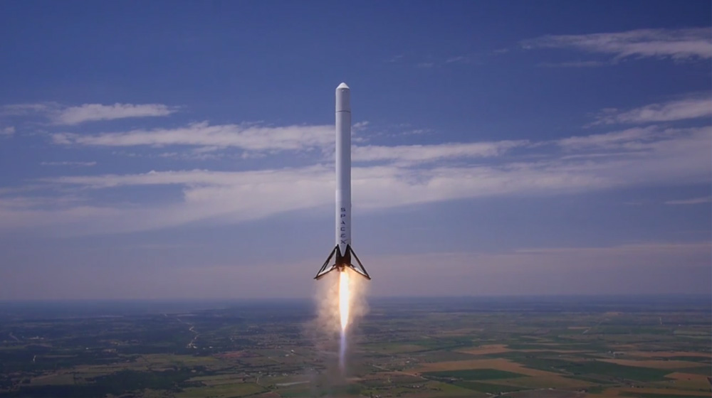
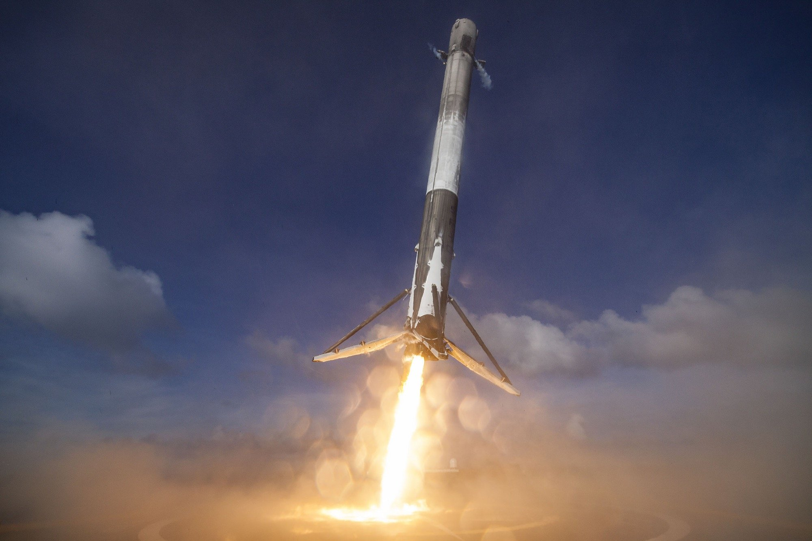
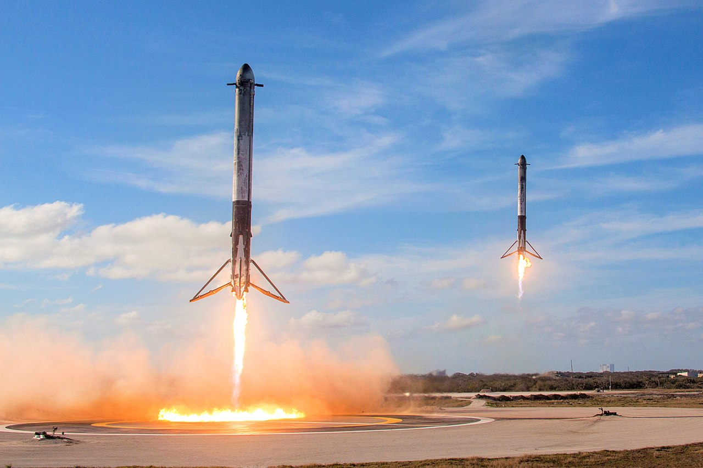

Falcon 9 is a family of two-stage-to-orbit medium lift launch vehicles, named for its use of nine Merlin first-stage engines,
designed and manufactured by SpaceX. Variants include the initial v1.0, v1.1, and current "Full Thrust" v1.2. Falcon 9 is powered by rocket
engines utilizing liquid oxygen and rocket-grade kerosene propellants. Unlike most rockets, which are expendable launch systems, Falcon 9
is partially reusable, with the first stage capable of re-entering the atmosphere and landing back vertically after separating from the
second stage. This feat was achieved for the first time on flight 20 with the v1.2 version in December 2015.
The Full Thrust version of the rocket has a reusable first stage after achieving its first successful landing in December 2015 and
first reflight in March 2017. However, plans to reuse the Falcon 9 second-stage booster have been abandoned as the weight of a heat
shield and other equipment would impinge on payload too much for this to be economically feasible for this rocket. The reusable booster
stage was developed using systems and software tested on the Grasshopper and F9R Dev technology demonstrators, as well as a set of
technologies being developed by SpaceX to facilitate rapid reusability.

Grasshopper hovering at 250m

F9 booster landing

Falcon Heavy boosters landing
Development
SpaceX originally intended to follow its light Falcon 1 launch vehicle with an intermediate capacity vehicle, the Falcon 5. In 2005,
SpaceX announced it was instead proceeding with development of the Falcon 9, a "fully reusable heavy lift launch vehicle", and had already
secured a government customer. The Falcon 9 was described as being capable of launching approximately 9,500 kg (21,000 lb) to low Earth orbit,
and was projected to be priced at $27 million per flight with a 3.7 m (12 ft) fairing and $35 million with a 5.2 m (17 ft) fairing. SpaceX
also announced development of a heavy version of the Falcon 9 with a payload capacity of approximately 25,000 kg (55,000 lb). The Falcon 9
was intended to enable launches to LEO, GTO, as well as both crew and cargo vehicles to the ISS.